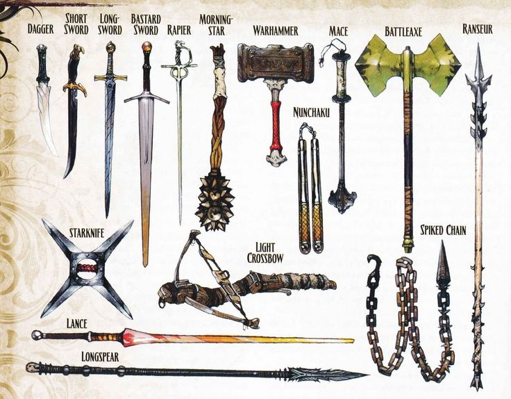
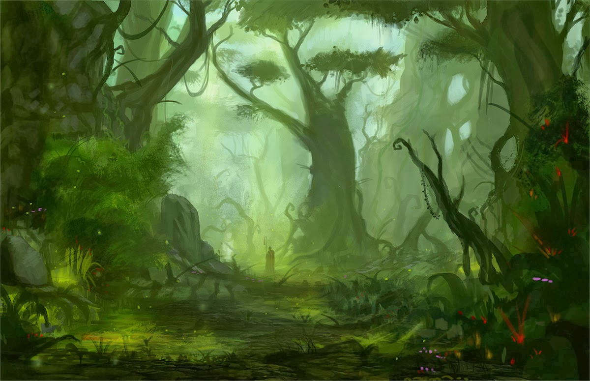
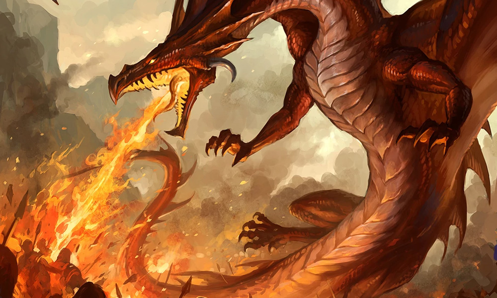
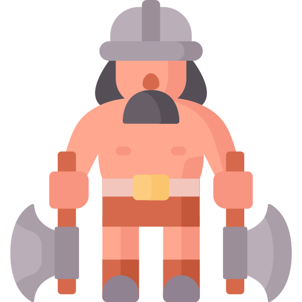
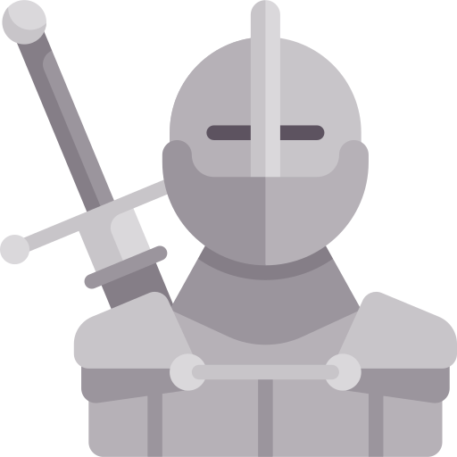

O jogo de interpretação Dungeons & Dragons é sobre contar histórias em mundos de espada e feitiçaria. Como jogos de faz de conta, D&D é conduzido pela imaginação. É sobre visualizar um castelo em ruínas em uma floresta escura e imaginar como um aventureiro fantástico pode reagir aos desafios que a cena apresenta.
Nesse mundo de fantasia, as possibilidades não têm limites.
Diferente de um jogo de faz de conta, D&D dá estrutura às histórias — uma forma de determinar as consequências das ações dos aventureiros. Os jogadores jogam dados para determinar quais dos seus ataques acertam ou erram e se seus personagem podem escalar um penhasco, se esquivar de um relâmpago mágico ou realizar alguma outra tarefa perigosa. Tudo é possível, mas os dados tornam algumas coisas mais prováveis que outras.
Se você é novo no D&D ou quer começar a aprender mais sobre as regras do jogo, exploramos alguns conceitos introdutórios abaixo e também ajudamos a guiá-lo até informações adicionais.
Nessa seção, vemos os papéis na mesa — basicamente, os jogadores participando da aventura bem como o Dungeon Master que os guia pelo jogo!
Armas
Cenários
Monstros



Classes
O Livro do Jogador de D&D recém-traduzido pela Galápagos traz 12 classes de personagens para que os jogadores possam escolher com o que eles desejam jogar. Essas classes representam um estereótipo, ou melhor, algo como uma profissão dentro do jogo (o Livro do Jogador fala nelas como uma vocação, pois além de suas habilidades ela também ajuda a definir um pouco a forma como seu personagem vê o mundo.). Elas possuem habilidades e conceitos próprios para diferenciá-las umas das outras. E o que vamos fazer aqui é explicar essas diferenças conceituais para que você se sinta mais preparado para escolher com qual classe deseja jogar.
Barbaro
Bárbaros sentem uma fúria interior que, por vezes, os toma e os faz ignorar golpes sofridos, usando o máximo de sua força para causar o maior estrago possivel em seu adversário. Sua principal habilidade é a Fúria. A fúria permite que o bárbaro sofra menos dano ao sofrer golpes e cause mais dano ao golpear. Seu bárbaro pode ser um nômade, um guerreiro tribal, um feroz gladiador, um combatente «possuído» ou qualquer outro personagem que você imaginar que seja dado a acessos de fúria quando em combate.

Bruxo
Bruxos buscam conhecimento, mas não qualquer conhecimento. A relação entre um bruxo e a entidade com a qual faz o pacto pode ser a de um cultista, de um adorador ou uma relação mestre-aprendiz. Muitas vezes, em troca dos ensinamentos proibidos, a entidade pede pequenos favores, nem sempre compreensíveis a mente mortal. O bruxo é alguém disposto a tudo para ter conhecimento e poder.
Seu bruxo pode ser um cultista, um estudioso, um combatente que preferiu fazer um acordo com alguma entidade a treinar duramente para lutar melhor, um comerciante ganancioso, um espião sobrenatural, um protetor de uma entidade antiga, um defensor de tradições esquecidas a eras ou qualquer outro conceito de alguém que buscou, através de um pacto, ganhar habilidades e conhecer segredos esquecidos ou proibidos.
Bardo
A magia está em toda parte e bardos aprendem a manipular a trama através da ressonância de suas palavras e sons com a trama, da mesma forma que o som de um caminhão passando na rua de sua casa pode fazer o vidro reverberar, ou que um cantor de ópera pode quebrar uma taça com sua voz. Seu bardo pode ser um menestrel, um espadachim, um arqueiro, um investigador, um espião, um diplomata, um trapaceiro, um encantador... Sendo a classe mais ampla e versátil, o céu é o limite.
Raças
Humanos
Os humanos são a raça mais comum e amplamente distribuída nos mundos de D&D, ocupando diversos ambientes, de desertos a florestas. Sua adaptabilidade cultural, social e étnica é notável, abrangendo desde povos cosmopolitas até aqueles de estilo de vida mais selvagem. Essa diversidade torna as comunidades humanas únicas, variando de indivíduos nobres e altruístas a outros egoístas e sem compaixão. A expansão territorial dos humanos é notável, sendo vista por algumas raças como uma praga em certas situações, gerando desconfiança em muitas criaturas nos mundos fantásticos de D&D.

Draconato
Draconatos são dragões humanoides altos, medindo geralmente mais de 1,90 metros e pesando entre 100 e 150 quilos. Possuem pés com três garras na frente e uma atrás, mãos com quatro garras, sendo uma delas opositora, e uma cabeça reptiliana com focinho rombudo, sobrancelha protuberante, babados reptilianos nas bochechas e orelhas, além de uma crista de escamas na parte de trás. Seus olhos são geralmente vermelhos ou dourados. O corpo é coberto por escamas, podendo ter cores relacionadas aos dragões cromáticos ou metálicos, mas também podem exibir tons menos comuns devido a cruzamentos entre diferentes linhagens de dragões.
Gnomos
Gnomos são pequenos, medindo entre 90 cm e 1,20 m de altura e pesando entre 18 e 20 quilos em geral. Gnomos da floresta, mais raros, são ainda menores, raramente ultrapassando 85 cm. Podem ser ofendidos por comparações como "mini-elfos" devido às orelhas compridas ou "mini anões" pelas barbas. A cor da pele varia de vermelho a tons de cinza, influenciada pela linhagem. Cabelos podem ser castanhos, azuis, brancos, entre outras cores. Olhos podem ter diversas tonalidades, sendo os de Gnomos de Agréstia das Fadas cintilantes e azulados. Suas roupas, geralmente em tons terrosos, refletem o ambiente local, incorporando elementos de couro e misturando-se com rochas ou plantas em aldeias pequenas.